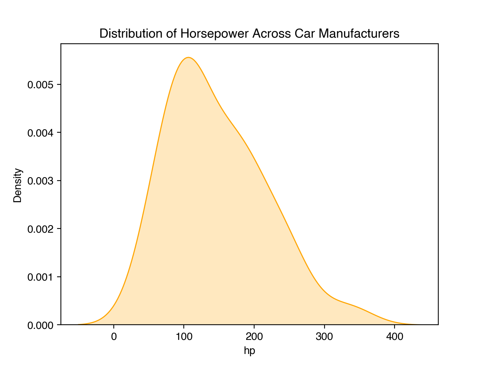
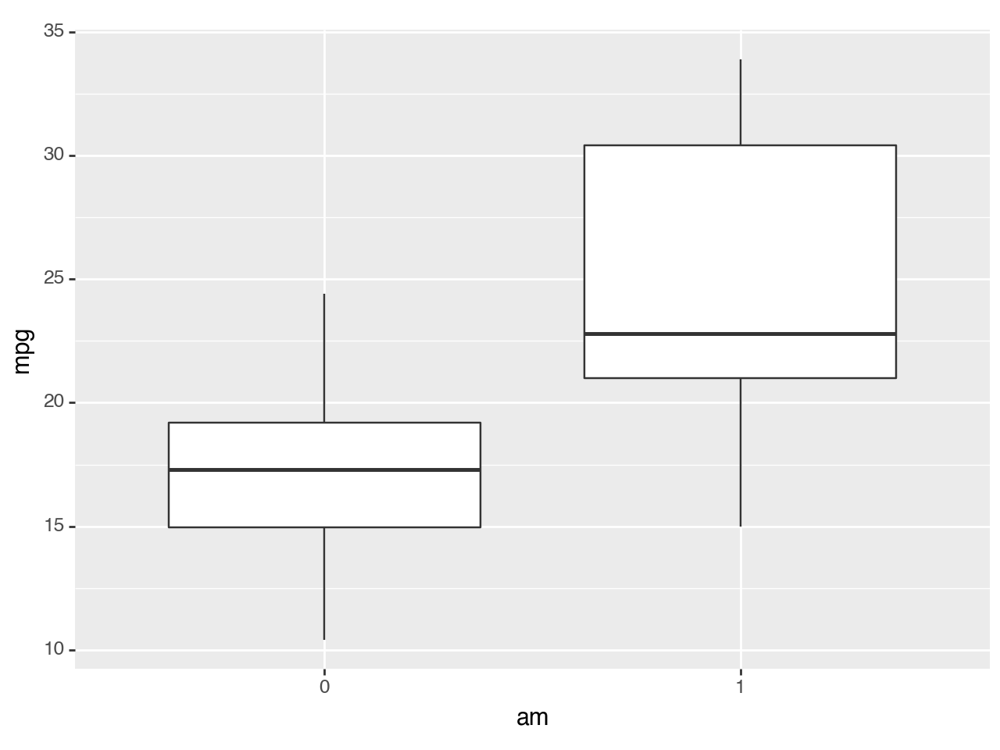
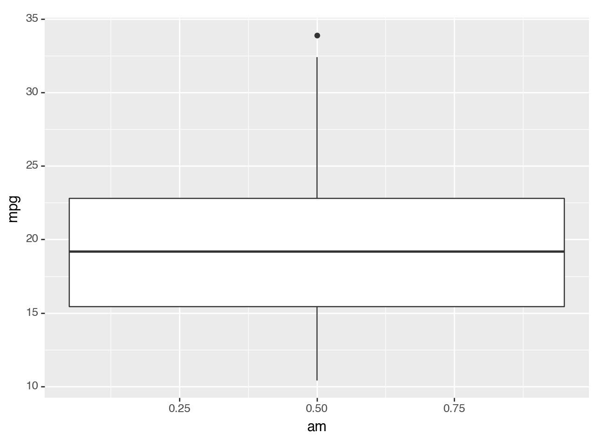
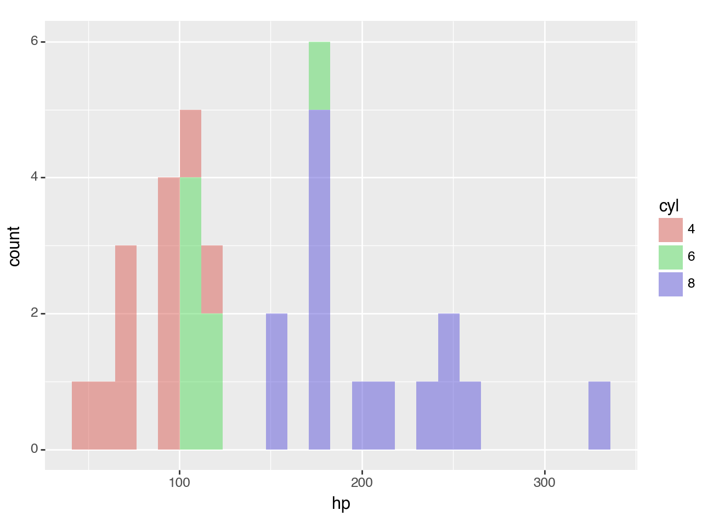
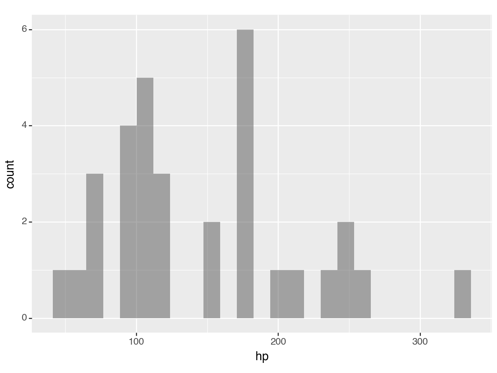
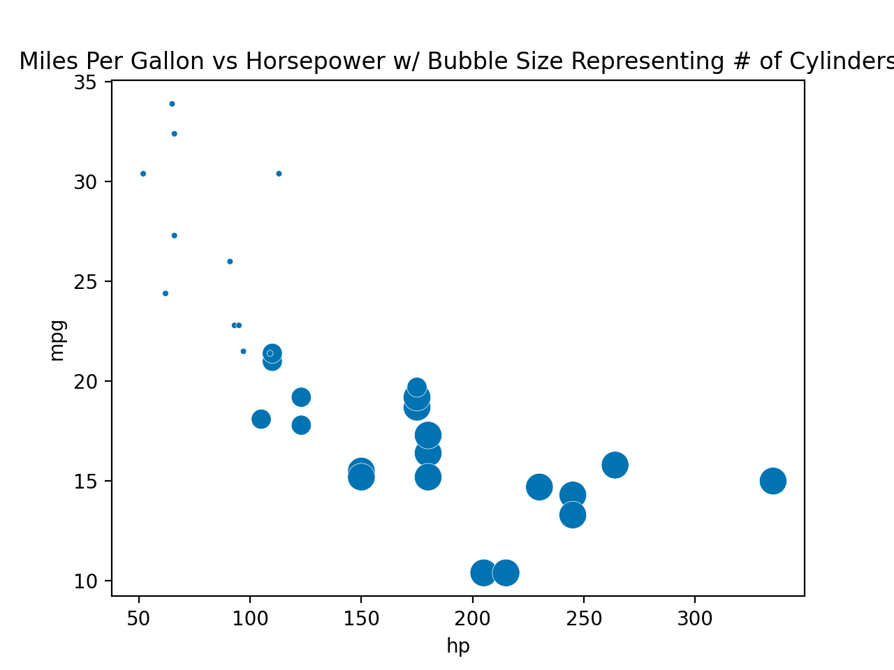
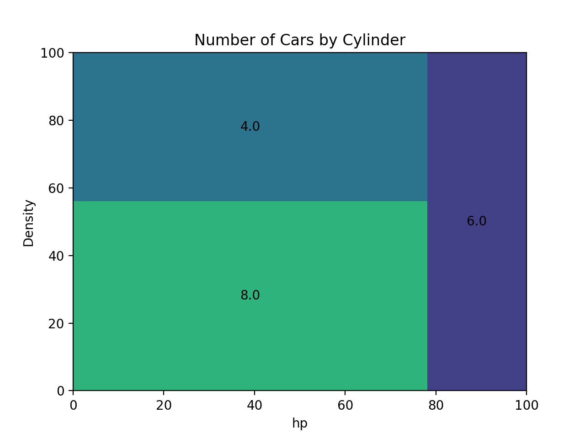

import statsmodels.api as sm
import pandas as pd
import matplotlib as mpl
mtcars = sm.datasets.get_rdataset("mtcars", "datasets", cache=True).data
df = pd.DataFrame(mtcars)Data Visualization Using plotnine
The Palmer Penguins dataset had a variety of column types with which to explore some nice visualizations. The mtcars dataset is another popular dataset for doing some simple data work, but does not contain the same types of variables.
Run the following code to load the mtcars dataset and explore the observations and variables contained within. To learn more about this dataset check out this site
df| mpg | cyl | disp | hp | drat | wt | qsec | vs | am | gear | carb | |
|---|---|---|---|---|---|---|---|---|---|---|---|
| rownames | |||||||||||
| Mazda RX4 | 21.0 | 6 | 160.0 | 110 | 3.90 | 2.620 | 16.46 | 0 | 1 | 4 | 4 |
| Mazda RX4 Wag | 21.0 | 6 | 160.0 | 110 | 3.90 | 2.875 | 17.02 | 0 | 1 | 4 | 4 |
| Datsun 710 | 22.8 | 4 | 108.0 | 93 | 3.85 | 2.320 | 18.61 | 1 | 1 | 4 | 1 |
| Hornet 4 Drive | 21.4 | 6 | 258.0 | 110 | 3.08 | 3.215 | 19.44 | 1 | 0 | 3 | 1 |
| Hornet Sportabout | 18.7 | 8 | 360.0 | 175 | 3.15 | 3.440 | 17.02 | 0 | 0 | 3 | 2 |
| Valiant | 18.1 | 6 | 225.0 | 105 | 2.76 | 3.460 | 20.22 | 1 | 0 | 3 | 1 |
| Duster 360 | 14.3 | 8 | 360.0 | 245 | 3.21 | 3.570 | 15.84 | 0 | 0 | 3 | 4 |
| Merc 240D | 24.4 | 4 | 146.7 | 62 | 3.69 | 3.190 | 20.00 | 1 | 0 | 4 | 2 |
| Merc 230 | 22.8 | 4 | 140.8 | 95 | 3.92 | 3.150 | 22.90 | 1 | 0 | 4 | 2 |
| Merc 280 | 19.2 | 6 | 167.6 | 123 | 3.92 | 3.440 | 18.30 | 1 | 0 | 4 | 4 |
| Merc 280C | 17.8 | 6 | 167.6 | 123 | 3.92 | 3.440 | 18.90 | 1 | 0 | 4 | 4 |
| Merc 450SE | 16.4 | 8 | 275.8 | 180 | 3.07 | 4.070 | 17.40 | 0 | 0 | 3 | 3 |
| Merc 450SL | 17.3 | 8 | 275.8 | 180 | 3.07 | 3.730 | 17.60 | 0 | 0 | 3 | 3 |
| Merc 450SLC | 15.2 | 8 | 275.8 | 180 | 3.07 | 3.780 | 18.00 | 0 | 0 | 3 | 3 |
| Cadillac Fleetwood | 10.4 | 8 | 472.0 | 205 | 2.93 | 5.250 | 17.98 | 0 | 0 | 3 | 4 |
| Lincoln Continental | 10.4 | 8 | 460.0 | 215 | 3.00 | 5.424 | 17.82 | 0 | 0 | 3 | 4 |
| Chrysler Imperial | 14.7 | 8 | 440.0 | 230 | 3.23 | 5.345 | 17.42 | 0 | 0 | 3 | 4 |
| Fiat 128 | 32.4 | 4 | 78.7 | 66 | 4.08 | 2.200 | 19.47 | 1 | 1 | 4 | 1 |
| Honda Civic | 30.4 | 4 | 75.7 | 52 | 4.93 | 1.615 | 18.52 | 1 | 1 | 4 | 2 |
| Toyota Corolla | 33.9 | 4 | 71.1 | 65 | 4.22 | 1.835 | 19.90 | 1 | 1 | 4 | 1 |
| Toyota Corona | 21.5 | 4 | 120.1 | 97 | 3.70 | 2.465 | 20.01 | 1 | 0 | 3 | 1 |
| Dodge Challenger | 15.5 | 8 | 318.0 | 150 | 2.76 | 3.520 | 16.87 | 0 | 0 | 3 | 2 |
| AMC Javelin | 15.2 | 8 | 304.0 | 150 | 3.15 | 3.435 | 17.30 | 0 | 0 | 3 | 2 |
| Camaro Z28 | 13.3 | 8 | 350.0 | 245 | 3.73 | 3.840 | 15.41 | 0 | 0 | 3 | 4 |
| Pontiac Firebird | 19.2 | 8 | 400.0 | 175 | 3.08 | 3.845 | 17.05 | 0 | 0 | 3 | 2 |
| Fiat X1-9 | 27.3 | 4 | 79.0 | 66 | 4.08 | 1.935 | 18.90 | 1 | 1 | 4 | 1 |
| Porsche 914-2 | 26.0 | 4 | 120.3 | 91 | 4.43 | 2.140 | 16.70 | 0 | 1 | 5 | 2 |
| Lotus Europa | 30.4 | 4 | 95.1 | 113 | 3.77 | 1.513 | 16.90 | 1 | 1 | 5 | 2 |
| Ford Pantera L | 15.8 | 8 | 351.0 | 264 | 4.22 | 3.170 | 14.50 | 0 | 1 | 5 | 4 |
| Ferrari Dino | 19.7 | 6 | 145.0 | 175 | 3.62 | 2.770 | 15.50 | 0 | 1 | 5 | 6 |
| Maserati Bora | 15.0 | 8 | 301.0 | 335 | 3.54 | 3.570 | 14.60 | 0 | 1 | 5 | 8 |
| Volvo 142E | 21.4 | 4 | 121.0 | 109 | 4.11 | 2.780 | 18.60 | 1 | 1 | 4 | 2 |
The statement “the mtcars dataset does not contain the same types of variables as the penguins dataset” is a little true and a little false. There are no variables that contain text values, BUT there are variables that it makes sense to consider categorical variables. In most situations, it makes sense to treat the values of categorical variables as text values instead of numeric values.
Use the astype() method to convert the categorical variables of the mtcars (df) dataset to have text values in the code chunk below. We’ve done one for you!
df["am"] = df["am"].astype(str)
# Convert the other variables below
df["cyl"] = df["cyl"].astype(str)
df["gear"] = df["gear"].astype(str)
df["carb"] = df["carb"].astype(str)
df["vs"] = df["vs"].astype(str)
print(df)
print(df.dtypes) mpg cyl disp hp drat wt qsec vs am gear carb
rownames
Mazda RX4 21.0 6 160.0 110 3.90 2.620 16.46 0 1 4 4
Mazda RX4 Wag 21.0 6 160.0 110 3.90 2.875 17.02 0 1 4 4
Datsun 710 22.8 4 108.0 93 3.85 2.320 18.61 1 1 4 1
Hornet 4 Drive 21.4 6 258.0 110 3.08 3.215 19.44 1 0 3 1
Hornet Sportabout 18.7 8 360.0 175 3.15 3.440 17.02 0 0 3 2
Valiant 18.1 6 225.0 105 2.76 3.460 20.22 1 0 3 1
Duster 360 14.3 8 360.0 245 3.21 3.570 15.84 0 0 3 4
Merc 240D 24.4 4 146.7 62 3.69 3.190 20.00 1 0 4 2
Merc 230 22.8 4 140.8 95 3.92 3.150 22.90 1 0 4 2
Merc 280 19.2 6 167.6 123 3.92 3.440 18.30 1 0 4 4
Merc 280C 17.8 6 167.6 123 3.92 3.440 18.90 1 0 4 4
Merc 450SE 16.4 8 275.8 180 3.07 4.070 17.40 0 0 3 3
Merc 450SL 17.3 8 275.8 180 3.07 3.730 17.60 0 0 3 3
Merc 450SLC 15.2 8 275.8 180 3.07 3.780 18.00 0 0 3 3
Cadillac Fleetwood 10.4 8 472.0 205 2.93 5.250 17.98 0 0 3 4
Lincoln Continental 10.4 8 460.0 215 3.00 5.424 17.82 0 0 3 4
Chrysler Imperial 14.7 8 440.0 230 3.23 5.345 17.42 0 0 3 4
Fiat 128 32.4 4 78.7 66 4.08 2.200 19.47 1 1 4 1
Honda Civic 30.4 4 75.7 52 4.93 1.615 18.52 1 1 4 2
Toyota Corolla 33.9 4 71.1 65 4.22 1.835 19.90 1 1 4 1
Toyota Corona 21.5 4 120.1 97 3.70 2.465 20.01 1 0 3 1
Dodge Challenger 15.5 8 318.0 150 2.76 3.520 16.87 0 0 3 2
AMC Javelin 15.2 8 304.0 150 3.15 3.435 17.30 0 0 3 2
Camaro Z28 13.3 8 350.0 245 3.73 3.840 15.41 0 0 3 4
Pontiac Firebird 19.2 8 400.0 175 3.08 3.845 17.05 0 0 3 2
Fiat X1-9 27.3 4 79.0 66 4.08 1.935 18.90 1 1 4 1
Porsche 914-2 26.0 4 120.3 91 4.43 2.140 16.70 0 1 5 2
Lotus Europa 30.4 4 95.1 113 3.77 1.513 16.90 1 1 5 2
Ford Pantera L 15.8 8 351.0 264 4.22 3.170 14.50 0 1 5 4
Ferrari Dino 19.7 6 145.0 175 3.62 2.770 15.50 0 1 5 6
Maserati Bora 15.0 8 301.0 335 3.54 3.570 14.60 0 1 5 8
Volvo 142E 21.4 4 121.0 109 4.11 2.780 18.60 1 1 4 2
mpg float64
cyl object
disp float64
hp int64
drat float64
wt float64
qsec float64
vs object
am object
gear object
carb object
dtype: objectIf you print out your new dataset, is it clear that the variables have been converted to text values? If so, how can you tell?
At first, just by looking at the printed data frames there is no way to tell that the variables have been converted to text values, as they are still whole numbers like 4,6,&8 for cylinders. However we can ensure that they have been changed by running ‘dt.dtypes’ which reveals the data types of each column. Here is where we can see that the numerical columns are now the “Object” type, indicating categories.
It should also be clear by how plotnine treats these variables.
Create side-by-side boxplots of the
mpgvariable by the different values of theamvariable. What happens if you convert theamvariable back to float values and then try to create this same plot? Explain the differences between the two plots.Create overlaid histograms of the
hpvariable for the different values of thecylvariable. What happens if you convert thecylvariable back to float values and then try to create this same plot? Explain the differences between the two plots.
# Create plot for (1) here
from plotnine import facet_wrap, ggplot, geom_boxplot, aes
(ggplot(df, aes(x = "am", y = "mpg"))
+ geom_boxplot()
)

<Figure Size: (640 x 480)># Change am back to float
df["am"] = df["am"].astype(float)
# Replot but now with float values
from plotnine import facet_wrap, ggplot, geom_boxplot, aes
(ggplot(df, aes(x = "am", y = "mpg"))
+ geom_boxplot()
)
<Figure Size: (640 x 480)>If you convert the ‘am’ categorical variable to float, when plotting the system does not recognize that there are only 2 values of ‘am’, 1 or 0. Instead of creating 2 boxplots intuitively for each value of ‘am’, it plots a single plot with the average score of ‘am’ of 0.5, and reflects the average mpg or aggregate distribution of ‘mpg’.
# Create plot for (2) here
from plotnine import ggplot, aes, geom_histogram
(ggplot(df, aes(x = "hp", fill = "cyl"))
+ geom_histogram(alpha=0.5, bins=25)
)
<Figure Size: (640 x 480)># Change cyl back to float
df["cyl"] = df["cyl"].astype(float)
#Replot with floated values
from plotnine import ggplot, aes, geom_histogram
(ggplot(df, aes(x = "hp", fill = "cyl"))
+ geom_histogram(alpha=0.5, bins=25)
)
<Figure Size: (640 x 480)>In this case once again, treating a categorical variable like car cylinders (4,6,8) creates problems when plotting and coloring. When trying to fill by a continuous variable from (4 to 8), Python treats this as one color rather than a gradient of colors as this could be confusing with a continuous x variable, which is typically true for histograms. This code could be slightly changed to have factor(“cyl”) which treats it as a categorical variable with the 3 groups 4,6,8, and results in our first plot.
Some of these variables, like the cyl variable, have numeric values that actually make sense as numbers (i.e. the number of cylinders in the engine). However, it doesn’t make the most sense to “do math” with this type of variable (e.g. take averages and such) because there are so few different value this can take on AND they’re an explicit choice made by the car manufacturer. So, it makes more sense to treat the cyl variable as a categorical variable despite it having numeric values.
You will need to keep these kinds of nuances about data in mind as you work with an increasing variety and richness of data, and do more complex things with them.
Choose 3 new geometries from the data-to-viz website for graphs that you’d like to explore using the mtcars dataset, and then create those graphs!
# Create plot with first new geometry here (Bubbleplot with Seaborn)
import seaborn as sb
import matplotlib.pyplot as plt
sb.scatterplot(data=mtcars, x = "hp", y="mpg", size="cyl", legend=False, sizes = (10,200))
plt.title("Miles Per Gallon vs Horsepower w/ Bubble Size Representing # of Cylinders")
plt.show()

# Create plot with second new geometry here (Density plot with Seaborn)
import seaborn as sb
sb.set_palette("colorblind")
sb.kdeplot(mtcars["hp"], fill=True, color = 'orange')
plt.title("Distribution of Horsepower Across Car Manufacturers")
Text(0.5, 1.0, 'Distribution of Horsepower Across Car Manufacturers')# Create plot with third new geometry here (Tree Diagram)
#!pip install squarify
import squarify as sq
# Sum the count of 'cyl'
cyl_counts = mtcars['cyl'].value_counts()
sq.plot(sizes=cyl_counts.values, label=cyl_counts.index)
plt.title("Number of Cars by Cylinder")
plt.show()